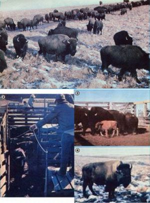

Innovative livestock owners are beginning to discover that the animals native to a given area are often hardier and more productive than are "modern" breeds.
"A cold wind blew across the prairie when the last buffalo fell . . . a deathwind for my people," said Chief Sitting Bull. And, indeed, the buffalo's near extinction ranks as one of American history's most shameful tales.
There was a time when the powerful beasts ranged from Virginia to California . . . from Canada to Florida . . . and down into Mexico. In fact, it's been (conservatively) estimated that when Europeans first arrived on these shores, there were over 60 million bison-as they're properly called-in existence . . . amounting to probably the greatest aggregation of large animals ever known to civilized Homo sapiens. Even as recently as the last century, a herd could contain a million individuals, so that "the country was one robe" and "the plains were black and appeared as if in motion".
However, as men and women from the eastern cities moved westward, the situation changed dramatically. The worst of such people wantonly butchered the marvelous creatures, taking just the hidesor sometimes only tongues-and leaving the carcasses to rot until the bone-harvesters could collect their share. Few people realize that this senseless slaughter caused much of the hostility that the Plains Indians-many of whom relied upon the bison for food, shelter, and morecame to feel toward the settlers!
By 1890, only a few small herds remained. More recently, however, as a result of the efforts of conservationists and ranchers who recognized the animals' value, buffaloes once again began to dot the American countryside. Today, there are an estimated 30,000 head-divided among about 400 herds-in the U.S. and Canada. (Although a couple of the groups number over 1,000, most are much smaller.) What's more, bison are, when properly raised, proving to be both enjoyable and highly profitable livestock animals!
A HARDY BREED
The buffalo has one distinct advantage over most domestic cattle . . . its incredible hardiness. With a rough hide and thick covering of woollike hair, a bison (even when very young) can easily tolerate the harsh, frigid winters of the upper prairie states . . . and can weather blizzards that would likely kill entire herds of beef animals.
Thriving on grasses alone, the native livestock can range and forage far and wide, and even root out food from beneath deep snow. In fact, some commercial buffalo herds are simply left to forage year ground, although most are fed a little hay during the cold months. (Our Kansas Fish ,and Game Department's herd is given 1-1/2 pounds of 18% protein pellets, per animal, throughout the winter . . . and supplemental hay when there's a ground cover of snow.)
In addition to being thrifty to feed, the beasts are relatively disease-free. A few cases of brucellosis, however, have recently been reported in bison herds, and-since the disease can affect humans and cattle, as well as other domestic animals-it's an illness that every potential buffalo buyer needs to be wary of. Some folks say that bison tend to develop their own resistance to brucellosis, and in states where they're still considered wild animals, testing for the disease isn't required. But for your own safety and that of all your barnyard critters, I'd recommend that, when purchasing a buffalo, you buy only one that's had a recent negative brucellosis blood test performed.
FOR WHAT THEY'RE WORTH
Since bison have thrived for thousands of years without human help, it's a pretty safe bet that the animals won't need much from you . . . and-in return for the little care it will require-your herd will reward you in a number of ways. Buffalo meat, for example, is delicious, relatively fat-free, and highly marketable .. . the hides can be used for anything from robes to tipis . . . bison "wool" can be spun and woven into garments . . . the creatures' mounted heads are considered valuable by some folks . . . and, if a bison rancher were to follow the example set by the Plains Indians of 200 years ago, he or she could probably learn how to utilize the sinews, bladders, "buffalo chips", and almost every other part of the animals that were once known as "the Indians' commissary".
Buffalo meat is the major source of income from a commercial bison herd. A mature cow will weigh about 800 to 1,200 pounds, while a large bull can tip the scales at more than a ton and stand six feet tall at the shoulder. Of this poundage, 40 to 50% will be usable meat (it works out to about the same dressing percentage as a steer) and can provide virtually the same cuts you expect of beefsteaks, roasts, ground meat, etc.-or be made into summer sausage and jerky. Bison tastes very similar to lean beef . . . and the key word here is lean! Buffalo steaks, you see, average less than 10% fat (one study reports only 4% for range-fed buffa lo) ... as compared to beef, which will contain from 20 to 40% fat. Bisonburgers are, therefore, valuable in weight-and cholesterol-watchers' diets, and-for just that reason-a number of hospital kitchens now serve buffalo instead of beef.
The animals' hides are also valuable, since bison leather is stronger and more pliable than that from cattle, and is in demand for any job where superior material is needed. A tanned "prime" specimen will bring about $10 per square foot ... which works out to between $200 and $500 per skin. "Prime" refers to the toughened, more durable pelts that are harvested during January and February. After that, the critters' long hair begins to fall out, and their coats become "ratty" looking, but even summer hides will often bring in from $100 to $400!
The shaggy woollike hair itself can be collected and spun into buffalo yarn. Unfortunately, it isn't practical to bring your buffalo "flock" together each spring for a funfilled, buffalo-shearing day . . . they're far from being as gentle as lambs!
Instead, you will have to collect the wool from places where the animals have rubbed it off ... in their wallows or on their scratching posts. Bison are avid scratchers . . . rubbing their skin blissfully on a chosen fencepost, tree, or rock. In fact, many of our early western telegraph poles were downed when over-enthusiastic buffaloes selected them as backscratchers! And, in the summertime, bison will roll in wet areas to give themselves mud coats for fly protection.
The majestic good looks of a bull buffalo open up yet another potential market for the bison herder. The mounted head of a large bull with an impressive set of horns (cows have horns, too, but those on a bull's more massive head are generally larger) will sometimes bring from $500 to $1,000, although it will cost about $400 to $800 to have the "trophy" processed by an experienced taxidermist.
And, as is the case with any animal enterprise, the sale of good breeding stock can provide an important part of the overall income from a buffalo herd. Bison for breeding are sold by the head-not by the pound-and prices, of course, vary greatly from area to area, and from animal to animal . . . but a buyer can figure on paying $200 to $700 for a calf or yearling, while a mature bull may run several thousand dollars.
BUFFALO "HUNTS"
Yet another potential moneymaker is available to the bison breeder . . . one that may not appeal to many folks, but-when carefully controlled-can provide a legitimate source of income.
There are, you see, plenty of men and women out there who seem to fancy themselves latter-day "Buffalo Bills". Such individuals are quite willing to pay a large fee for the privilege of hunting down (read that as "walking into the pasture") and shooting a trophy bull.
Depending on your point of view, this idea may sound either abhorrent or ludicrous, but using this method to replace standard butchering practices can have some advantages:
[1] A well-placed bullet is as humane a way to butcher an animal as any (it's hard to be sure, though, that your hunters-to-be are well-qualified marksmen who won't make poor, crippling shots).
[2] Large bulls can be nigh onto impossible to drive out of the range or lure into a corral, and on-the-range butchering is often the only practical thing to do.
[3] There's nothing a buffalo likes less than a fenced-in corral. A one- to two-ton bull will crash through all but the sturdiest of holding pens, and if your corral fence isn't strong enough, you could find yourself chasing a to-be-butchered bull and his harem all across the prairie.
[4] Some folks believe that an animal's fear or stress reaction causes chemical changes that affect meat flavor and possibly even make it less wholesome. And-in watching the buffalo roundup at the Kansas Fish and Game Department's annual sale-it seemed to me that the adult bulls were much more easily spooked than were the cows. Because of their intense fear of holding pens, you might be able to produce better meat by butchering mature bulls out on the range, and thus avoiding the drive to a corral and inevitable trauma.
Considering the foregoing points, some buffalo ranchers argue that, if people are willing to pay to make the kill for you, why not let them? (Of course, the price you charge the "mighty hunters" will depend upon what parts of the animal, if any, they may want to keep.)
BUFFALO HUSBANDRY
Bison are grazing ruminants that feed on natural prairie grasses or planted pas tures with equal enthusiasm. Some folks claim that it's possible to maintain three adult buffaloes on the same range where two cows could be kept, but most experienced herders will tell you to figure about the same amount of pasture for each bison as you'd give a cow of the same weight. (The size of the per-animal area, of course, will depend entirely on how good your grassland is. A buffalo cow and her calf might need only one acre of lush pasture, while it'd take five to ten acres to support the same animals in my part of Kansas ... and in near-desert regions where the grass is very sparse, a cow and calf-bovine or buffalo-would require as much as 20 to 40 acres.)
Bison breed in the late summer or early fall, and a female's gestation period-like that of a cow-is approximately 275 days (nine months). Most calves are born between April 15 and June 15 (though some stragglers may not arrive until September), and the whole herd will assume the responsibility of protecting the babies. When the young first appear, they have tawny red coats, which are lost in about four months. The calves begin to graze very early, although they may still nurse when they're yearlings.
Both bison bulls and heifers reach sexual maturity in the third or fourth summer. But bulls in herds that already have established sires may not become effective breeders until they're six to eight years old, since the newcomers will be unable to compete for mating privileges until they've gained the strength and experience to earn positions within the herd. Don't let this working out of the social order bother you, though. Such "battles of the bulls" are short, and seldom result in serious harm to the participants.
Though some buffalo breeders maintain a one-to-one ratio of bulls to cows, most keep only one male for every ten females. With a one-to-ten ratio, you can figure on an 80 to 90% calf crop each year. You can also expect your buffalo to continue producing young for a long time, since bison in captivity may live to be 30 to 40 years old. (You can easily spot the old codgers, because-with advancing age-their horns will become rough, increase in curvature and diameter, begin to splinter, and generally look worn.)
A WONDERFUL WILD STREAK
Keeping bison "home on the range" can prove to be difficult. Provided they have adequate room to roam, buffaloes do tend to respect a fence more than cows do. Rather than push against it or crane their necks through it for that always greener grass beyond, the beasts will contentedly munch on their own side of a barrier . . . but this tolerance goes only so far: A frightened herd can stampede through or over almost anything in its way. Buffaloes can outrun most horses . .. jump a fence better than deer ... muscle their way through a barrier in bulldozer fashion . . . and move so quickly that, when a panicked animal begins to bounce from one side of a corral to the other, it can look a lot like a monstrous handball flying about a giant court.
A four- to five-foot barrier, with five strands of wire, is considered minimum fencing by most owners. And a corral needs to be built of 8- to 10-foot-high iron or 2 X 10 boards mounted inside 8 - to 10-inch-thick posts (as shown in the accompanying photos).
The fact is that bison haven't changed much over the years, no matter how hard folks have tried to "civilize" the beasts. These proud animals always have been and still are wild creatures. Domestication may seem to work for a while, but eventually nature will reassert itself . . . and a ton of "tame" buffalo that suddenly reverts to crazy-eyed ferocity can-in seconds wreak havoc on fences, other critters, or the nearest human.
However, most buffalo herders admire the animals for their permanent wildness. While such men and women never forget the potentially destructive force that lurks beneath the creatures' usually placid behavior, they feel that raising the once abused beasts combines the preservation of an important part of the Old West with a modern approach to earning an income.
If you agree-and if you have the necessary rangeland, the fences, and the good sense to maintain a healthy respect (and admiration) for the buffalo's tremendous strength-keeping a bison herd might be just the livestock operation for you.
EDITOR'S NOTE: Further information about bison as livestock may be obtained from the American Buffalo Association (Dept. TMEN, Box 25, Wallace, Kansas 67761) and the National Buffalo Association (Dept. TMEN, Box 706, Custer, South Dakota 57730). Include a self-addressed stamped envelope (and perhaps a dollar or two) when you write.
|
 |
|
|